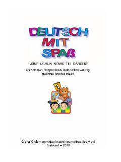

DM1-sinf o'quvchilari uchun o'yinlar asosida nemis tilini o'rgatuvchi darslik.
Ushbu darslik O'zbekiston Respublikasi umumiy o'rta ta'lim maktablarining 1-sinf o'quvchilari uchun mo'ljallangan nemis tili o'quv-metodik majmuasidir. Kitob o'quvchilarga alifboni o'rgatmasdan, o'yinlar, qo'shiqlar va og'zaki nutq mashqlari orqali nemis tilini qiziqarli tarzda o'rgatishni maqsad qilgan.